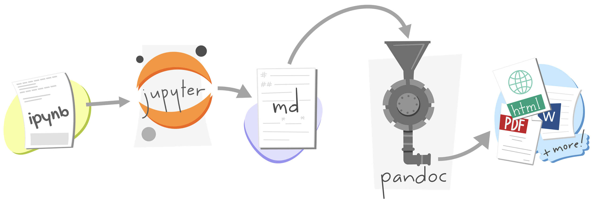
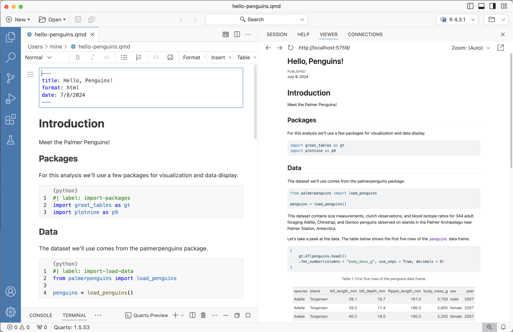
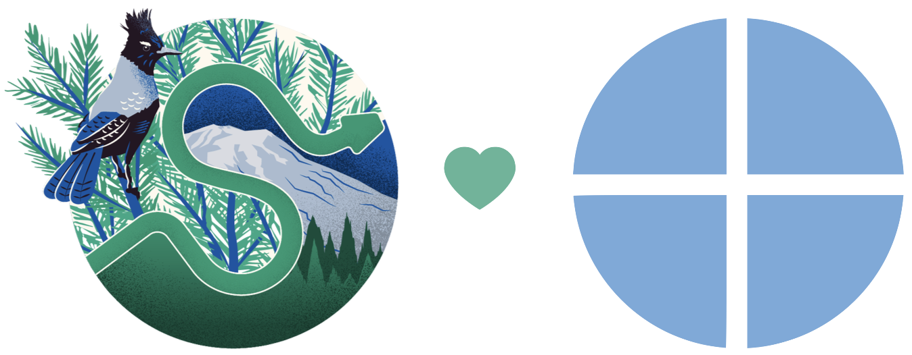

Usage: quarto
Version: 1.5.53
Description:
Quarto CLI
Options:
-h, --help - Show this help.
-V, --version - Show the version number for this program.
Commands:
render [input] [args...] - Render files or projects to various document types.
preview [file] [args...] - Render and preview a document or website project.
serve [input] - Serve a Shiny interactive document.
create [type] [commands...] - Create a Quarto project or extension
use <type> [target] - Automate document or project setup tasks.
add <extension> - Add an extension to this folder or project
update [target...] - Updates an extension or global dependency.
remove [target...] - Removes an extension.
convert <input> - Convert documents to alternate representations.
pandoc [args...] - Run the version of Pandoc embedded within Quarto.
typst [args...] - Run the version of Typst embedded within Quarto.
run [script] [args...] - Run a TypeScript, R, Python, or Lua script.
install [target...] - Installs a global dependency (TinyTex or Chromium).
uninstall [tool] - Removes an extension.
tools - Display the status of Quarto installed dependencies
publish [provider] [path] - Publish a document or project to a provider.
check [target] - Verify correct functioning of Quarto installation.
help [command] - Show this help or the help of a sub-command.Hello, Quarto!
SciPy 2024: Unlocking Dynamic Reproducible Documents
A Quarto Tutorial for Scientific Communication
Mine Çetinkaya Rundel
Duke University + Posit PBC
Pre-workshop
Setup
1. Software: Download and install Python and Quarto:
- Python 3: https://www.python.org/downloads/
- Quarto 1.5.53: https://quarto.org/docs/get-started/
2. Tools: Dowload and install VS Code and Jupyter and Quarto extensions.
- VS Code: https://code.visualstudio.com/
- Quarto Extension: https://marketplace.visualstudio.com/items?itemName=quarto.quarto
- Jupyter Extension: https://marketplace.visualstudio.com/items?itemName=ms-toolsai.jupyter
3. Exercises: Go to bit.ly/quarto-scipy24-exercises, click on “Use this template” then “Create a new repository”. Click on the green Code button and copy the URL of the repo.
4. Packages: Open VS Code. Under Start, click on Clone Git Repository, and paste the URL of the repo. Open the cloned project. In the Command Palette, go to Python: Create Environment... and choose Venv, then choose the (latest) Python version you have installed. Check the box for requirements.txt in the “Select dependencies to install” menu and hit OK.
Welcome
Code of Conduct
Attendees at SciPy 2024 are subject to the NumFOCUS Code of Conduct.
Be kind to others. Do not insult or put down others. Behave professionally. Remember that harassment and sexist, racist, or exclusionary jokes are not appropriate for NumFOCUS.
All communication should be appropriate for a professional audience including people of many different backgrounds. Sexual language and imagery is not appropriate.
NumFOCUS is dedicated to providing a harassment-free community for everyone, regardless of gender, sexual orientation, gender identity and expression, disability, physical appearance, body size, race, or religion. We do not tolerate harassment of community members in any form.
Thank you for helping make this a welcoming, friendly community for all.
About me
Professor of the Practice
Department of Statistical Science
Duke UniversityDeveloper Educator, Posit PBC
- Teaching data analysis in computational notebooks for 10+ years
- Teaching and using Quarto for 3+ years
About you
Please share with the person next to you…
- Your name
- Your professional affiliation
- What you hope to get out of this tutorial
03:00
Meeting you where you are
These materials are pitched at someone who:
knows some Python + Markdown
has worked in VS Code and/or Jupyter Lab
wants to learn about Quarto
I’ll teach you
More Markdown
New Quarto formats
New Quarto projects
Workshop structure
My turn
- Lecture segments
- Feel free to just watch, take notes, browse docs, or tinker around with the code
Our turn
- Lecture segments + live coding
- (Optionally) follow along with live coding
Your turn
- Practice exercises for you
- Work on your own or with the person next to you
Getting help
During my turn and your turn segments – raise your hand
During our turn segments – also feel free to raise your hand for questions but if your question seems specific to your setup, I might come around and help during the next your turn break
Setup
1. Software: Download and install Python and Quarto:
- Python 3: https://www.python.org/downloads/
- Quarto 1.5.53: https://quarto.org/docs/get-started/
2. Tools: Dowload and install VS Code and Jupyter and Quarto extensions.
- VS Code: https://code.visualstudio.com/
- Quarto Extension: https://marketplace.visualstudio.com/items?itemName=quarto.quarto
- Jupyter Extension: https://marketplace.visualstudio.com/items?itemName=ms-toolsai.jupyter
3. Exercises: Go to bit.ly/quarto-scipy24-exercises, click on “Use this template” then “Create a new repository”. Click on the green Code button and copy the URL of the repo.
4. Packages: Open VS Code. Under Start, click on Clone Git Repository, and paste the URL of the repo. Open the cloned project. In the Command Palette, go to Python: Create Environment... and choose Venv, then choose the (latest) Python version you have installed. Check the box for requirements.txt in the “Select dependencies to install” menu and hit OK.
Let’s get started!
What is Quarto?
Quarto …
is an innovative, open-source scientific and technical publishing system compatible with Jupyter notebooks and all your favorite plain text markdown editors

Artwork from “Hello, Quarto” keynote by Julia Lowndes and Mine Çetinkaya-Rundel, presented at RStudio Conference 2022. Illustrated by Allison Horst.
With Quarto …
you can weave together narrative and code to produce elegantly formatted output as documents, web pages, blog posts, books and more, with…
- consistent implementation of attractive and handy features across outputs: tabsets, code-folding, syntax highlighting, etc.
- defaults that meet accessibility guidelines as well as features that enable good practices for producing accessible documents
- native multi-lingual support for multiple languages like Python, R, Julia, Observable, and more via the Jupyter engine for executable code chunks
A tour of Quarto
Sit back and enjoy! … or follow along with hello-penguins.qmd.
- Running individual cells
- Rendering a document
- Editing with source editor and visual editor
- Inserting images and lightbox effect
- Inserting tables
- Customizing formats:
pdf,docx,revealjs - Customizing format options:
code-fold,toc - Code cells: labels, alt-text, execution options (
echo,warning) - Cross referencing figures and tables, with and without the visual editor
- Converting between Jupyter Notebooks and plain text markdown documents
How it works
Revisit: What is Quarto?
Quarto is a command line interface (CLI) that renders plain text formats (.qmd, .rmd, .md) OR mixed formats (.ipynb/Jupyter notebook) into static PDF/Word/HTML reports, books, websites, presentations and more.
Under the hood
jupyterevaluates Python code and returns a.mdfile along with the evaluated code- Quarto applies Lua filters + CSS/LaTeX which is then evaluated alongside the
.mdfile by Pandoc and converted to a final output format
Under the hood
with a wider lens…

jupyterorknitrevaluates Python, Julia, R, or Observable code and returns a.mdfile along with the evaluated code- Quarto applies Lua filters + CSS/LaTeX which is then evaluated alongside the
.mdfile by Pandoc and converted to a final output format
Aside: Lua filters
- Here is an example of a Lua filter that converts strong emphasis to small caps, from https://pandoc.org/lua-filters.html:
- Lua filters written by R/Python/Julia developers should be interchangeable between formats - not language specific!
- We won’t go into the details of writing Lua filters in this workshop, and you don’t need to worry about learning about Lua filters unless you’re working on extending Quarto.
From the comfort of your own homeworkspace



Render and preview
in the Terminal in VS Code or JupyterLab
Render to output formats:
# ipynb notebook
quarto render notebook.ipynb
quarto render notebook.ipynb --to docx
# plain text qmd
quarto render notebook.qmd
quarto render notebook.qmd --to pdfLive preview server (re-render on save):
Render and preview
in the Editor in VS Code
Install and enable the Quarto extension
Clicking on Preview or Cmd + Shift + K
Quarto formats
One install, “Batteries included”
Quarto comes “batteries included” straight out of the box:
HTML reports and websites
PDF reports
MS Office (Word, Powerpoint)
Presentations (Powerpoint, Beamer,
revealjs)Books
Manuscripts
…
- Any language, exact same approach and syntax
Many Quarto formats
| Feature | Quarto |
|---|---|
| Basic Formats | html, pdf, docx, typst |
| Beamer | beamer |
| PowerPoint | pptx |
| HTML Slides | revealjs |
| Advanced Layout | Quarto Article Layout |
| Cross References | Quarto Crossrefs |
| Websites & Blogs | Quarto Websites, Quarto Blogs |
| Books | Quarto Books |
| Interactivity | Quarto Interactive Documents |
| Journal Articles | Journal Articles |
| Dashboards | Quarto Dashboards |
Your turn
In VS Code, open the hello-penquins.qmd file. Render the document to HTML.
Add an
authorfield in the YAML and add your name.Add some text and style it with bold, italics, etc. using the source editor as well as the visual editor.
Modify the figure to add units to the axis labels: grams for body weight and mm (milimeters) for flipper length. Render or preview the document and make sure the changes are reflected in the HTML output.
Change the html theme to
sketchy. See https://quarto.org/docs/output-formats/html-themes.html for documentation on HTML theming.
05:00
Wrap up
A pause
Where does the name “Quarto” come from?
Learn more
quarto.org/docs/guide > Authoring & Computations
Questions
Any questions / anything you’d like to review before we wrap up this module?
